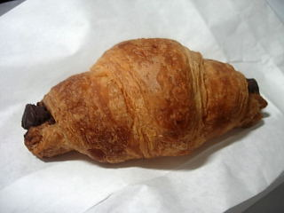

アミーズのチョコクロワッサン
2008/8/31
モーニングで普通のクロワッサンを食べたら美味しかったので、テイクアウトのチョコクロワッサンを買って帰りました。

クロワッサン自体がちょっと甘めで、サクサクっとしていてそれだけでも美味しくいただけたんですが、チョコが入って、お菓子らしくしっかり甘くなってました。
おやつにピッタリな商品だなって思いました。なかなか喫茶店には行けないですが、機会があったらまた買いたいって思いました。
出雲市平田町中ノ島7116-2
閉店しました。
2008/8/31
モーニングで普通のクロワッサンを食べたら美味しかったので、テイクアウトのチョコクロワッサンを買って帰りました。

クロワッサン自体がちょっと甘めで、サクサクっとしていてそれだけでも美味しくいただけたんですが、チョコが入って、お菓子らしくしっかり甘くなってました。
おやつにピッタリな商品だなって思いました。なかなか喫茶店には行けないですが、機会があったらまた買いたいって思いました。
2007/11/4
とても久々に喫茶店に行きました。
ラピタ平田店近くのお洒落な感じの喫茶店です。
このお店ではカフェラテやバニララテを注文すると絵を書いてもらえるんですが、絵がハートマークみたいな簡単な図柄じゃなくて、うさぎとか虎の可愛い絵でおもしろいです。
付加価値があっていいですね。
バニララテの味ですが、ミルク大目でマイルドな味でした。甘さもマイルドだったので、飲みやすかったです。
寒くなってきたら温まるのにいい商品ですね。